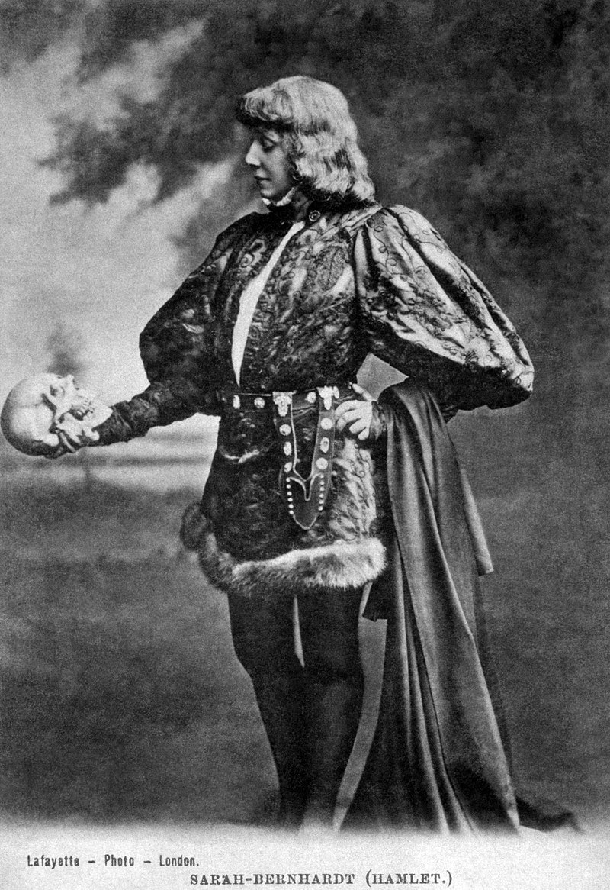

Theatre or theater[a] is a collaborative form of performing art that uses live performers, usually actors or
actresses, to present the experience of a real or imagined event before a live audience in a specific place,
often a stage. The performers may communicate this experience to the audience through combinations of
gesture, speech, song, music, and dance. Elements of art, such as painted scenery and stagecraft such as
lighting are used to enhance the physicality, presence and immediacy of the experience.[1] The specific
place of the performance is also named by the word "theatre"
as derived from the Ancient Greek θέατρον
(théatron, "a place for viewing"), itself from θεάομαι (theáomai, "to see", "to watch", "to observe").
Modern Western theatre comes, in large measure, from the theatre of ancient Greece, from which it borrows
technical terminology, classification into genres, and many of its themes, stock characters, and plot
elements. Theatre artist Patrice Pavis defines theatricality, theatrical language, stage writing and the
specificity of theatre as synonymous expressions that differentiate theatre from the other performing arts,
literature and the arts in general. [2][b]
